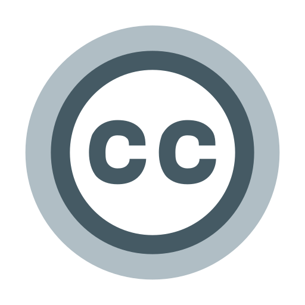

Shareware
Shareware é um tipo de software distribuído com uma licença que permite aos usuários testá-lo antes de decidir se desejam comprar a versão completa. Essa licença geralmente permite que os
usuários copiem e distribuam o software para outras pessoas, com a intenção de promover sua divulgação.
Um exemplo
WinZip, um programa de compactação de arquivos que permite ao usuário testar todas as suas funcionalidades por um período limitado antes de ser obrigado a adquirir a licença completa para continuar usando o programa. Durante o período de teste, o usuário pode usar o software para avaliar se ele atende às suas necessidades, e se decidir comprá-lo, receberá uma chave de ativação que desbloqueia todas as funcionalidades do programa. Outros exemplos de software shareware incluem o WinRAR, o Snagit e o Winamp.
Freeware
Freeware é um tipo de software que é distribuído gratuitamente, permitindo que os usuários o usem, copiem e distribuam sem custo. Esses programas podem ser baixados da internet ou distribuídos em mídia física, como CDs ou DVDs, sem que o usuário precise pagar pelo seu uso.
Existem muitos exemplos de freeware disponíveis na internet, incluindo:
1) Mozilla Firefox - um navegador da web gratuito e de código aberto.
2) 7-Zip - um utilitário de compactação de arquivos gratuito.
3) VLC Media Player - um reprodutor de mídia gratuito e de código aberto.
4) Audacity - um editor de áudio gratuito e de código aberto.
5) GIMP - um editor de imagens gratuito e de código aberto.
Open Source
Open source é um termo utilizado para descrever um tipo de software cujo código-fonte é aberto e pode ser acessado, utilizado e modificado livremente por qualquer pessoa. Isso significa que qualquer pessoa com conhecimentos de programação pode contribuir com o desenvolvimento do software, corrigir problemas e implementar novas funcionalidades
Um exemplo
sistema operacional Linux, que é um sistema operacional de código aberto, desenvolvido e mantido por uma grande comunidade de programadores em todo o mundo. Outros exemplos incluem o navegador Mozilla Firefox, a plataforma de blogs WordPress, o software de edição de vídeo Blender e o software de gerenciamento de projetos Redmine. O movimento open source tem crescido muito nos últimos anos, sendo cada vez mais adotado por empresas e organizações governamentais que buscam reduzir custos e aumentar a transparência e colaboração em seus projetos de software.
Licenças creative commons
As Licenças Creative Commons são um conjunto de licenças de direitos autorais que permitem aos criadores de conteúdo, como escritores, artistas, músicos, fotógrafos e outros, disponibilizar suas obras para uso público sob certas condições específicas.
As licenças Creative Commons são baseadas em uma combinação de restrições e permissões que o criador da obra pode escolher. Há seis tipos diferentes de licenças Creative Commons, que variam de mais restritivas a menos restritivas:
1)Atribuição (CC BY)
2)Atribuição - Compartilhamento pela mesma Licença (CC BY-SA)
3)Atribuição - Sem Derivações (CC BY-ND)
4)Atribuição - Uso Não Comercial (CC BY-NC)
5)Atribuição - Uso Não Comercial - Compartilhamento pela mesma Licença (CC BY-NC-SA)
6)Atribuição - Uso Não Comercial - Sem Derivações (CC BY-NC-ND)
